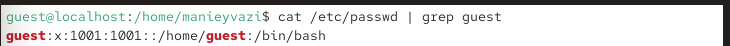
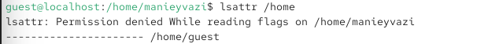
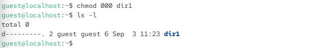

06.октябрь.2026
Дискреционное разграничение прав в Linux. Основные атрибуты
Получение практических навыков работы в консоли с атрибутами файлов, закрепление теоретических основ дискреционного разграничения доступа в современных системах с открытым кодом на базе ОС Linux.
useradd guest.passwd guest. При вводе короткого пароля система выдала
предупреждение «BAD PASSWORD: The password is shorter than 8
characters», после повторного ввода пароль был успешно обновлён
Рис. 1 — Создание пользователя guest и установка пароля
su guest.pwd —
/home/manieyvazi, что не является домашней директорией
пользователя guest.whoami — guest.id получены сведения: uid=1001(guest),
gid=1001(guest), groups=1001(guest).
Рис. 2 — Вход под пользователем guest и определение его идентификаторов
/etc/passwd с помощью команды
cat /etc/passwd | grep guest.guest:x:1001:1001::/home/guest:/bin/bash.id.
Рис. 3 — Поиск учётной записи guest в файле /etc/passwd
lsattr /home для просмотра
расширенных атрибутов поддиректорий./home/manieyvazi получен отказ в
доступе: «Permission denied While reading flags»./home/guest — пустые
(все атрибуты сняты).
Рис. 4 — Просмотр расширенных атрибутов директорий в /home
mkdir dir1.lsattr определено, что расширенные атрибуты на
dir1 не установлены.ls -l определены права доступа:
drwxr-xr-x (755) — владелец имеет права rwx, группа и
остальные — r-x.
Рис. 5 — Создание директории dir1 и проверка её прав и атрибутов
chmod 000 dir1.ls -l проверена правильность выполнения: права
изменились на d---------.
Рис. 6 — Снятие всех прав с директории dir1
echo "test" > /home/guest/dir1/file1.ls -l /home/guest/dir1 подтверждено, что файл
file1 не создан (также получен отказ в доступе).cd dir1 также завершилась
отказом «Permission denied». (Отказ в создании файла и переходе в
директорию dir1)Рис. 7
| Права директории | Права файла | Создание файла | Удаление файла | Переименование файла | Просмотр файлов | Смена директории | Чтение файла | Запись в файл |
|---|---|---|---|---|---|---|---|---|
| d (000) | (000) | - | - | - | - | - | - | - |
| d –x– (100) | (000) | - | - | - | - | + | - | - |
| d rwx– (700) | (000) | + | + | + | + | + | - | - |
(Результаты эксперимента по проверке прав доступа)
| Операция | Минимальные права на директорию | Минимальные права на файл |
|---|---|---|
| Создание файла | –x (100) или rwx (700) | (000) |
| Удаление файла | –x (100) или rwx (700) | (000) |
| Переименование файла | –x (100) или rwx (700) | (000) |
| Просмотр файлов в директории | r-x (500) или rwx (700) | (000) |
| Смена директории | –x (100) | (000) |
| Чтение файла | –x (100) | r– (400) |
| Запись в файл | –x (100) | -w- (200) |
(Определение минимально необходимых прав)
В ходе лабораторной работы были получены практические навыки работы в
консоли с атрибутами файлов и закреплены теоретические основы
дискреционного разграничения доступа в ОС Linux. Была создана учётная
запись пользователя guest, изучены команды pwd,
whoami, id, cat /etc/passwd,
lsattr, ls -l, chmod. Опытным
путём установлено, что для выполнения операций внутри директории
необходимы права на выполнение (x), а для создания и удаления файлов —
также права на запись (w). Продемонстрировано, что при отсутствии прав
доступа (chmod 000) владелец директории не может создавать файлы,
просматривать содержимое и переходить в неё. Полученные результаты
согласуются с целью работы.